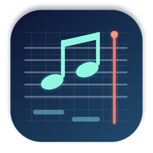
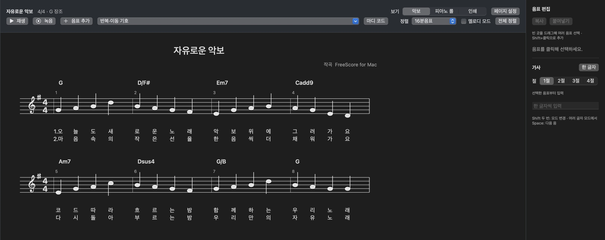
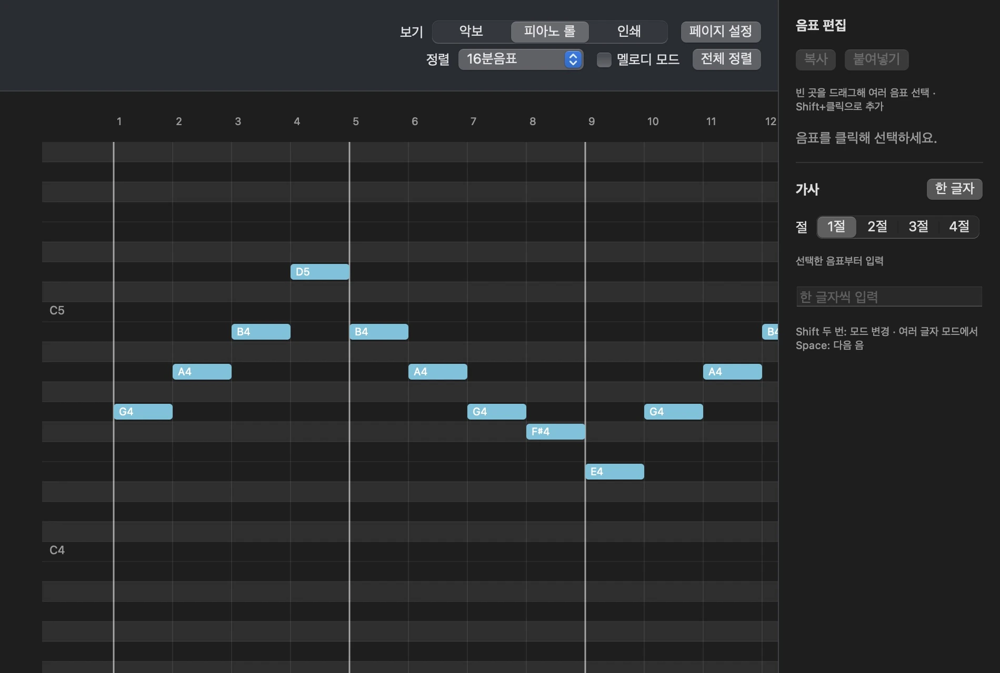
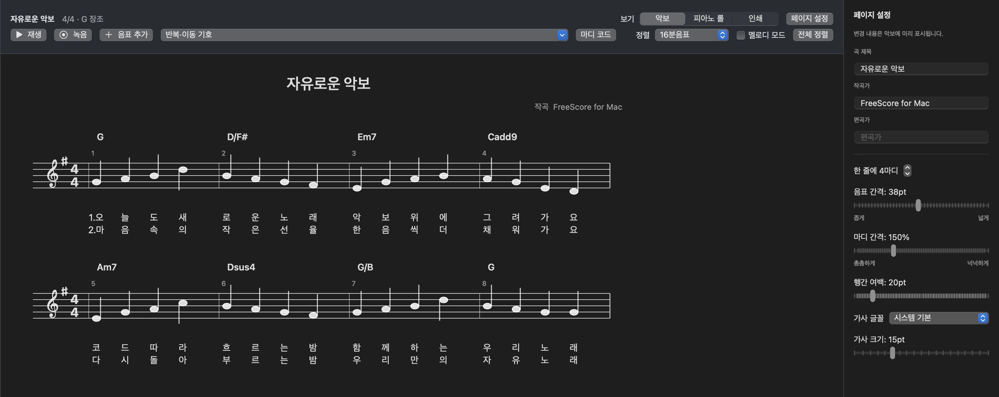
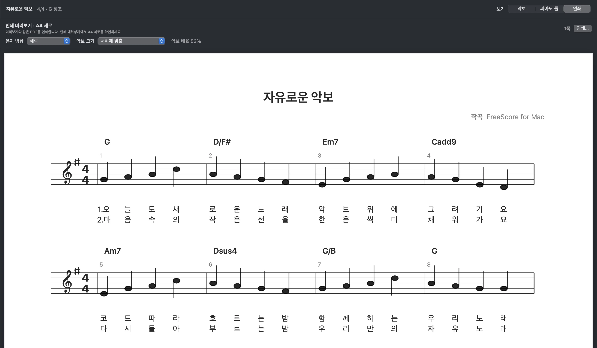

악보와 피아노 롤
오선지와 그리드 사이를 오가며 음의 높이, 시작, 길이를 직접 편집합니다. 다중 선택, 복사·붙여넣기와 4·8·16·32분음표 정렬을 지원합니다.

FreeScore for Mac✦ MADE WITH CODEX v0.5.0
MIDI에서 시작해 악보, 피아노 롤, 코드와 가사, 인쇄까지. FreeScore for Mac은 내가 필요한 프로그램을 직접 구현해서 쓰는 새로운 시대를 기념하는 앱입니다.
macOS 14 이상 · 오픈 소스 MIT · 현재 배포본은 Apple 공증 전입니다.

실제 앱 화면 · 공개 예제 악보A NEW KIND OF PERSONAL SOFTWARE
이 앱은 음악 작업의 작은 불편에서 출발했습니다. Codex와 함께 원하는 기능을 하나씩 구현해 실제 Mac 앱으로 만들었습니다. Made with Codex는 그 과정을 담은 선언입니다.
WHAT YOU CAN DO
MIDI를 가져온 뒤 음표를 다듬고, 노래를 완성해 악보로 출력하세요.
오선지와 그리드 사이를 오가며 음의 높이, 시작, 길이를 직접 편집합니다. 다중 선택, 복사·붙여넣기와 4·8·16·32분음표 정렬을 지원합니다.
마디 위에서 코드를 입력하고, 조성을 바꾸면 코드도 옮깁니다. 한국어 한 글자씩 음표에 맞춰 가사를 쓰고 여러 절을 나란히 봅니다.
재생선에서 시작하고 메트로놈과 함께 녹음합니다. 도돌이표, 1·2번 괄호, D.C., D.S., Coda, Fine의 이동을 재생에 반영합니다.
한 줄의 마디 수, 음표·마디 간격, 행 여백과 가사 글꼴을 조절합니다. 세로·가로 인쇄 미리보기로 결과를 확인하세요.
REAL APP SCREENSHOTS
아래 화면은 공개 예제 프로젝트를 앱에서 직접 열어 캡처했습니다.



DOWNLOAD & UPDATES
최신 릴리스가 게시되면 이 페이지의 버전과 다운로드 링크가 자동으로 갱신됩니다. 버전별 변경 사항은 GitHub Releases에서 확인하세요.
자동 배포본은 현재 Apple 서명·공증이 없습니다. ZIP과 함께 제공되는 SHA256SUMS.txt로 파일 무결성을 확인할 수 있습니다. 개발자는 배포 안내를 참고하세요.